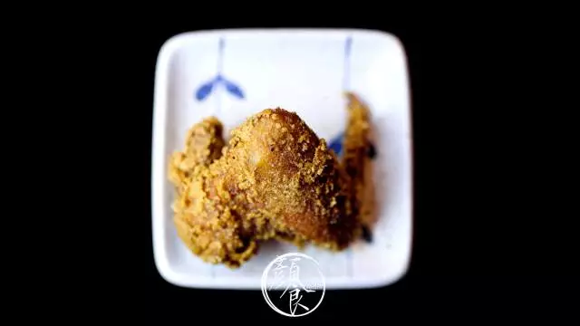

用千本鸟居将绵延几公里的神社风情带入厦门，在凭栏望海的双子塔也树立了一个。驻足这里也能感受到浓郁的日本风情。
没有街边小巷的嘈杂喧闹，让人烦心，别有深夜食堂的氛围，和几位好友，来此畅谈些生活中的小事，回忆快乐的时光。
点滴之处可见用心精良，艺妓的扇子，樱花一直在盛开，唯美浪漫的电影情节仿佛历历在目。

我穿过神社的大门
与你一起寻味日料的精髓
丼
燒 肉 丼
野球肋排丼
精选重量级的猪肋排，高温炸至酥脆，在烤箱中双面炙烤，重装登场，独特的海苔酥搭配滑嫩的温泉蛋，每一口都迸发新的滋味。
刀叉碰撞间，一根根肋排点燃了食欲的高潮。
原切牛肋条丼
现切牛肉肋条，将最嫩的部位精细烹调，大块厚实，却嫩而不柴，鲜香度也恰到好处，多一分少一分都不完美的程度。
在口中，佐料的味道缓慢散开，享用时带有不舍与留恋，不舍这精致美味在口中慢慢散尽。想要抓住，一刻也不放松。
爆肉山丼
肉永远填不满一个吃货的胃，怎么吃都不嫌多，超量微辣口味烧肉，只为满足爱吃肉重口味的你，切片的猪肉更加入味。
爱吃肉的小伙伴，千万不要错过了哦。加以正宗的韩式泡菜，用隐匿的糖心蛋来提升口感，如果感觉腻口，还可用酸甜梅酿番茄解腻。
日出燒肉丼
爱葱花的你不能错过，居于丼（dong）魂经典料理之首，满满葱花中屹立黄金蛋黄，招牌菜品，味道不用多说，尝过便知。
日出灑落，仿佛洒在地上的阳光，绝地美景，匠心搭配创造口感的新颖，咸香根烧肉是无敌开胃的组合，用牛肉，鲜豚诠释日式传统料理。
照燒雞腿肉丼
将香葱与大块鸡腿肉串起，均匀涂抹照烧酱，鲜而不腻，大块的鸡腿肉是肉食者们的最爱，方便食取。
在这个盛夏拿起来撸串的感觉很过瘾，食后用清淡的汤清口，准备开始下一道美味。
蒲燒鰻鱼丼
鳗鱼是日料的点睛之笔，蒲烧鳗鱼是将鳗鱼现杀用秘制酱料烧制而成，保留了肉质的新鲜感，又不乏浓郁的酱料口味。
鳗鱼的皮富含胶原蛋白，
新鲜鱼籽散发诱人光泽，
营养全面，丰富，
小编也对其爱不释手。
丼
小 食
台灣香腸
用低浓度的清酒慢慢腌制，Q弹有嚼劲却又回味无穷。
片片切下的台湾香肠搭配蒜片，将肉质的清爽展现的淋漓尽致。
芝士雞排
芝士雞排
爆浆口感
流出的芝士是最美的风景，
饱满的芝士味与软嫩鸡肉的鲜美融合。
外焦里嫩，藏匿不住的“酱心”，
藏匿不住的无尽美味。
蘋果松阪豬
猪颈肉肥瘦适中，精选精品猪颈肉，上乘的食材烹饪起来口感更佳，软嫩的肉质，夹在苹果中，层次感分明，果香增加了几份清爽。
芥末章鱼
一剂芥末的刺激让胃口全面打开，爽口嚼劲的章鱼是餐前小食的先行味道，嚼劲十足，舌头先运动一番。
胡麻豆腐
豆腐的浓郁被麻酱的鲜香提升了一个层次，滑嫩的口感赋予了日料的新生命，
经过涅槃打造后，以全新姿态呈现。
懶人蝦
懒人的福音，将劲道的虾肉完全裸露，省去了剥壳的烦恼琐事。
将虾肉的鲜白饱满完全展露，不用剥壳的感觉只能用“爽”字形容了。
最愛吃的雞翅

整块的鸡翅分量不容小觑，包裹起来用滚沸的油炸到金黄色，捞起出锅，放入烤箱慢烤些许时间，作料的味道喷香四溢，酥脆的外衣一口咬下，咔呲咔呲。
用经典日料定食，诠释烧肉的文化
用美味打动你我的心，期待与你邂逅
门店信息
【丼魂·烧肉丼（世茂店）】
人均：46元/人
地址：厦门市思明区演武西路182号3楼316-2店铺（双子塔商场）
电话：0592-2086356
营业时间：11:00-14:00，17:00-21:30周一至周日
【丼魂·烧肉丼（老虎城店）】
人均：46元/人
地址：厦门市思明区思明南路118号老虎城2层
电话：0592-7063570
营业时间：11:30-14:00；17:30-22:00 周一至周日
 330445074@qq.com
330445074@qq.com 12345
12345